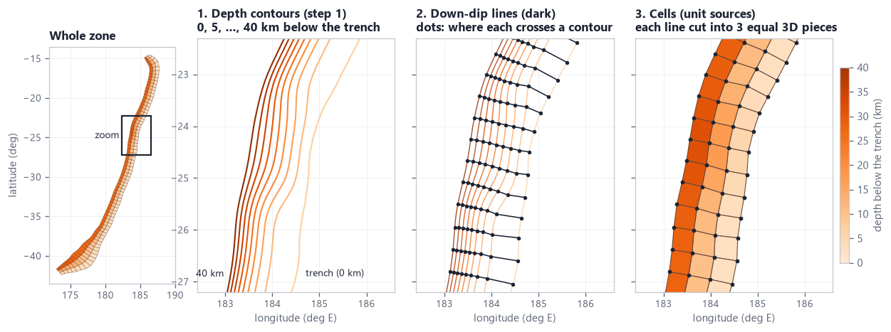
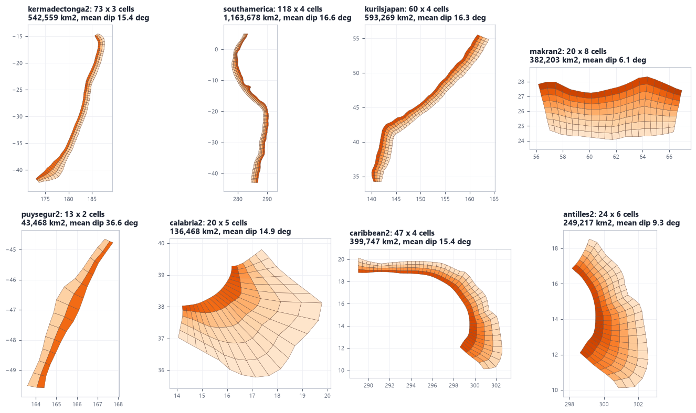

2. The mesh
Step 1 gave a set of depth lines (contours) drawn on the plate interface. Step 2 cuts that surface into a grid of cells of about 50 x 50 km, the unit sources. It does it with rptha's own method, the one PTHA18 used. It checks the result for broken cells, and only if it finds one does it try a repair. This page explains the method, what "broken" means, what --discretizer optimal does, and shows it working on real data.
At a glance
Read left to right. The contours go through rptha's method. The mesh is checked. If it is healthy (the normal case, all 8 examples), it is kept as it is. Only a broken mesh goes down the repair path. The accepted mesh is saved once, with a fingerprint, and every later step reuses it.
mesh_defects). The repair path (red) exists as a safety net. None of the 8 examples needed it, but a real case where it is needed is shown in --discretizer optimal. The dashed arrow means "computed from", not "read from a file": the cell properties are recomputed from the grid wherever they are needed.inputs/geometry/<zone>_slab2_contours.shp (step 1). With --ptha false nothing else (50 km width); with --ptha true the width and the row count from PTHA18's files.data/slab2/unit_source_grid.npy + unit_source_grid.meta.json, and figures/scratch_mesh_map.png (preliminary, step 9 redraws it). The log prints the grid size, the defect check, the cell statistics and, where PTHA18 has a mesh, the comparison.Where in the code: templates/step2_build_grid.py.tmpl main() (becomes <folder>/steps/step2_build_grid.py), pyptha_v12/contour_discretisation.py, pyptha_v12/unit_sources.py, pyptha_v12/grid_cache.py.
generate.py --mesh-file this step does not mesh anything: the unit sources are the cells of the file you give, read by pyptha_v12/mesh_file.py into the same node array and used as given. Everything below describes the SLAB path. What is new in v12.The mesh, in plain words
A large subduction earthquake breaks part of the plate interface (the surface where one plate slides under the other). PTHA18 does not model every possible shape of rupture. It cuts the interface into a grid of cells, the unit sources, and builds every earthquake scenario as a rectangle of neighbouring cells. All the cells together are the mesh. Everything later in the pipeline is computed per cell: the plate speed under it (step 3), which past earthquakes fall on it (step 5), how often each block of cells ruptures (step 7).
Two words describe directions on the interface. Along strike means parallel to the trench (the line on the sea floor where the plate starts to dive). Down dip means down the slope of the interface, away from the trench. A mesh has columns side by side along strike, and rows stacked down dip. The lines that separate the columns run from the trench to the deepest contour: they are the down-dip lines. Placing them well is the whole difficulty of step 2.
unit_source_grid has shape (n_downdip+1, 3, n_alongstrike+1): node row r (0 = trench), the three numbers lon, lat, depth (km below the trench), and node column c. The same layout as rptha's R code. A cell is the quadrilateral between nodes (r, c), (r, c+1), (r+1, c+1), (r+1, c).kermadectonga2's grid has shape (4, 3, 74): 4 node rows (3 rows of cells) and 74 node columns (73 columns of cells), 219 cells in all.
rptha's method, step by step
rptha is the R package PTHA18 was computed with. Its mesh builder takes depth contours and returns the grid. The Python code ports it line by line (discretized_source_from_contours_orthogonal, called by lm and by optimal). The figure shows the three stages on the real kermadectonga2 run. It was produced by calling the same functions and checking the result against step 2's saved grid: identical to the last digit.

- Order and orient the contours. The contours are sorted by depth. The shallowest (the trench) is turned to run along strike in a fixed sense, then every deeper contour is flipped if it runs the other way. Without this, the start of one contour could be paired with the end of the next.
- Describe every contour by a number s from 0 to 1. s = 0 is the contour's first point, s = 1 its last, and s = 0.5 the point half way along it (by distance). A small function turns any s into a longitude and latitude (
_line_interpolator, rptha'smake_line_interpolation_fun). - Decide how many down-dip lines. One per 50 km of trench, plus one:
desired_num_lines = ceil(trench_length / 50 + 1). On kermadectonga2 the trench (0 km contour) measures 3,604.2 km (on the WGS84 ellipsoid, as R'ssppackage measures it), so ceil(3604.2 / 50 + 1) = 74 lines, that is 73 columns. - Write every down-dip line as a list of s values, one per contour: where the line crosses that contour. All lines together form the s-matrix (one row per contour, one column per line). Explained in the next section.
- Optimise the s-matrix so that the lines cross the contours at right angles and are evenly spaced. This is the least-squares problem of the quality measure, solved with Levenberg-Marquardt on four grids of increasing size.
- Turn each line into a 3D path: its crossing points with their contour depths (lon, lat, depth).
- Decide how many rows from the mean 3D length of those paths and the desired width (rows and width).
- Cut every path into equal 3D pieces (
interpolate_3D_path): the path is densified along great circles, depth varies linearly between contours, androwspoints are taken at equal 3D distances. Those points are the grid's nodes.
Where in the code: contour_discretisation.py _build_interpolators(), _line_interpolator(), _optimise_s_matrix(), discretized_source_from_contours_orthogonal(), interpolate_3D_path(). R originals: rptha/R/downdip_3d_lines_on_source.R (create_downdip_lines_on_source_contours_improved) and discretized_source_from_source_contours.
The s-matrix: a down-dip line as a list of positions
Instead of moving points around freely on a map, rptha describes each down-dip line by where along each contour it crosses it. That is one number per contour, s. A line that crosses the 0 km contour 10% of the way along it, the 5 km contour 11% of the way along, and so on, is the column (0.10, 0.11, ...). The optimiser only has to move numbers between 0 and 1, and every candidate line is guaranteed to lie on the contours.
The real s-matrix of kermadectonga2 has 9 rows (0 to 40 km) and 74 columns. Its first five columns, and column 41, as computed by make_step2.py:
contour line 1 line 2 line 3 line 4 line 5 ... line 41 0 km 0.0000 0.0137 0.0275 0.0476 0.0683 ... 0.5474 5 km 0.0000 0.0143 0.0285 0.0440 0.0596 ... 0.5473 10 km 0.0000 0.0135 0.0272 0.0421 0.0580 ... 0.5500 ... 40 km 0.0000 0.0137 0.0272 0.0399 0.0520 ... 0.5477
Each row increases, the first column is 0 everywhere, and a given line sits at nearly the same fraction of every contour (line 41 at 0.547 to 0.550), because on this zone the contours have similar lengths.
Levenberg-Marquardt, simply
The optimiser has one "badness" number per crossing point (defined in the next section) and wants all of them as close to zero as possible. It minimises their sum of squares: a least-squares problem. Levenberg-Marquardt (LM) is the standard way to solve one:
- From the current s-matrix, measure how each badness changes when each free s is nudged a tiny bit (the Jacobian, here by finite differences: change one number, recompute).
- Use that to predict the step that would lower the sum of squares most. LM blends two strategies: a bold jump to where a straight-line model says the minimum is, and a cautious step straight downhill. A "trust" parameter decides the blend.
- Try the step. If the badness really went down, accept it and trust the model more next time. If not (or if the step made two lines cross, which counts as infinitely bad), reject it and step more cautiously.
- Repeat until the improvement is tiny (relative change below
ftol= 0.001) or after 50 Jacobians.
rptha calls the MINPACK routine through R's minpack.lm::nls.lm. The Python code calls the same MINPACK code through scipy.optimize.leastsq, with the same settings, so it takes the same steps.
Multigrid: coarse first, then finer
Optimising 74 lines at once from a flat start is slow and can get stuck. rptha first solves the problem with 1/8 of the lines, then 1/4, 1/2 and all of them, each time starting from the previous solution stretched to the new number of lines (levels with fewer than 3 lines are skipped). The very first start is evenly spaced: s = 0, 1/(n-1), 2/(n-1), ... 1 on every contour.
_optimise_s_matrix(verbose=True)). The sum of squared badness at the 74-line level falls from 108.1 for evenly spaced lines to 8.10 after optimisation: from a typical 0.40 per crossing point to 0.11 (666 points = 9 contours x 74 lines).One safeguard runs after each level. If LM stopped after its very first Jacobian (it did not move at all), rptha re-solves twice from a slightly shaken start: every free s is moved by +/- 0.2/(n-1), then by a quarter of that, with a tighter tolerance (ftol = 1e-6, up to 250 iterations). R draws the random signs without a seed; the Python code uses a seeded generator (seed 1234) so every run gives the same mesh.
MINPACK fidelity: why the small details matter for the curious
A least-squares optimiser that only approximately follows MINPACK (for example scipy.optimize.least_squares, whose "lm" method uses its own finite-difference steps and has no 50-iteration cap) ends in a slightly different optimum: down-dip lines 0.2 to 1.4 km away from rptha's. The Python code therefore reproduces the R call nls.lm(par, fn, control = list(ftol = 1e-3)) step for step:
- Same algorithm.
scipy.optimize.leastsqis MINPACK itself (lmder, which runs the same iterations as nls.lm'slmdifwhen given the same Jacobian). Settings as nls.lm's defaults:ftol1e-3,xtol= sqrt(machine epsilon),gtol0,factor100, automatic scaling. - Same Jacobian, bit for bit. MINPACK's
fdjac2perturbs one parameter at a time by h = sqrt(eps) x |s| and divides the change by h. Each badness value depends only on its own node and its four neighbours (a 5-point stencil), so the Python code colours the parameters with c = (i + 2j) mod 5 and perturbs all parameters of one colour together: 5 function calls instead of one per parameter, and the same numbers (_stencil_colouring,_fd_jacobian; testtest_coloured_jacobian_is_minpack_fdjac2_bit_for_bit). If a grouped step makes a row non-monotone, that group is redone one parameter at a time, as fdjac2 would have seen it. - Same iteration cap. nls.lm stops once the 50th Jacobian is computed (so at most 49 steps). The Python code reproduces the stop by handing MINPACK a zero Jacobian, which makes its gradient test stop it where it stands (
_nls_lm; testtest_nls_lm_equals_true_lmdif). - Same "impossible" value: infinity. When a trial step makes a row of the s-matrix decrease (two lines crossing), R's
get_quality_matrixreturns Inf for every residual, and so does the Python code. A large finite number (1e100) instead would not be cosmetic: with Inf, MINPACK's norm of the rejected trial is NaN, its testp1*fnorm1 >= fnormis false and the trust region shrinks by a computed factor; with 1e100 the test is true and it always shrinks by 0.1. On makran2 the first step's sum of squares was 3.595 with 1e100 against R's 3.668; with Inf it is 3.66832243 against 3.66832247, and the same final optimum to 1e-9 (from the code comment on_BAD). - Same arithmetic. Haversine distances are written in geosphere's exact expression order (
2 * atan2(sqrt(a), sqrt(1 - a)) * r), interpolation follows R'sapproxincluding its handling of exact knot hits, and the residuals are flattened column-major like R'sc(q_matrix). The Jacobian amplifies last-digit differences by about 1e8, so these keep the iterations on R's path. - Geodesy as R. rptha's
geospherecalls are spherical (radius 6,378,137 m), so the interpolation along great circles uses a sphere (_GEOD_SPHERE). The trench length that sets the number of lines uses R's ellipsoidalsp::SpatialLinesLengths, matched with the WGS84 ellipsoid.
Result. On the same contours, the Python down-dip lines sit on rptha's R output: 0.00 m on puysegur2 and makran2, within 2 cm on cascadia, 11 cm on philippine, 7 m median on newhebrides2 (puysegur2 is checked by test_downdip_lines_match_rptha_r_output, which requires under 1 m; see Validation). One addition that is not in rptha, and can only matter on the shaken re-solve path: a level whose result is non-monotone, not finite, or worse than its own start is discarded in favour of that start, with a printed note.
The quality ("badness") measure
For every crossing point of a down-dip line with a contour, rptha computes one badness number. It is zero for a perfect crossing and grows as the crossing gets worse. It has two parts: orthogonality (does the line cross the contour at a right angle?) and regularity (is the line at an even distance from its two neighbours?).
The regularity term grows extremely fast when spacing becomes uneven. Its value for one gap (the formula's half term):
| gap / even gap (sp) | 1 | 1.25 | 1.5 | 2 or 0.5 | 3 | 0.25 |
|---|---|---|---|---|---|---|
| ½ (exp(exp(|ln sp|) - 1) - 1) | 0 | 0.142 | 0.324 | 0.859 | 3.195 | 9.543 |
For comparison, a crossing 10 degrees off square costs about 1.25 x cos(80 deg) = 0.22 in the orthogonality term. So the optimiser accepts some skew to keep columns evenly spaced, but never lets a gap double or halve. Why both matter: square crossings give cells close to rectangles, whose length, width and dip are well defined; even spacing gives cells of similar size, so that a scenario of a given magnitude covers a similar number of cells anywhere on the zone.
If a candidate s-matrix is not increasing along every row (two lines would cross), the whole badness vector is set to infinity and LM rejects the step.
Where in the code: contour_discretisation.py _quality_matrix() (R: get_quality_matrix), with _spherical_to_cartesian2d() for the local projection. Test: test_optimiser_reduces_badness.
Rows and width
The number of columns comes from the trench length (above). The number of rows comes from how long the down-dip lines are, and from the desired cell width (the down-dip size of a cell). rptha's rule, applied to the optimised lines:
n_downdip is passed to the discretiser). The minimum of 2 rows applies only to the width rule.| setting | width W | row count |
|---|---|---|
--ptha false (all 8 examples) | 50 km on every zone (PTHA18's documented target size) | rptha's rule, at least 2 rows |
--ptha true (default of generate.py) | the zone's approx_unit_source_width in PTHA18's sourcezone_parameters.csv: 50 km, except puysegur2 35 km | PTHA18's own count if its unit_source_statistics_<zone>.nc is present, otherwise the rule |
Worked examples
- kermadectonga2 (
--ptha false): the 74 lines are 90.5 to 281.9 km long, mean 157.1 km. round(157.1 / 50 - 1) = round(2.14) = 2, plus 2 = 4 nodes, so 3 rows of cells, the same as PTHA18. Because every column gets 3 rows, the cell widths range from 31.5 to 91.5 km (step 2's log). - puysegur2 (
--ptha false): a steep, narrow zone, mean line 71 km. round(71 / 50 - 1) = round(0.42) = 0, so the rule gives 1 row. The log says:down-dip rows: the 50 km width rule gives 1 on a 71 km mean transect; using 2 (PTHA18's minimum, ReportPTHA p.14). The final mesh is 13 x 2. With PTHA18's 35 km width the rule itself gives round(71 / 35 - 1) = 1, plus 2 = 3 nodes, the same 2 rows: that is why PTHA18 chose 35 km there.
Where in the code: discretized_source_from_contours_orthogonal() (the rule and min_downdip), templates/step2_build_grid.py.tmpl (DESIRED_LENGTH_KM = 50, DESIRED_WIDTH_KM, MIN_DOWNDIP_ROWS = 2, N_DOWNDIP_OVERRIDE = None), lib/official_geometry_params.py width_km(), n_downdip_rows(). The same values are written into the input JSON by step 6, so the engine meshes with the same settings.
How many columns: --columns trench|average (v8.2)
Every row of an rptha mesh has the same number of cells. rptha counts them from the trench (above): the trench length divided by 50 km. On a straight zone every row is about as long as the trench, so every cell is about 50 km long. On a tight arc the deep rows are much shorter than the trench, so their cells are much shorter too: calabria2's trench is 980 km long and its 60 km contour 243 km, which gives 20 columns, cells of about 50 km at the trench and about 12 km at depth.
--columns | number of columns | use |
|---|---|---|
trench (default) | ceil(trench length / 50 km), rptha's and PTHA18's rule | every zone; it is the mesh PTHA18's method gives (fed PTHA18's contours, it reproduces PTHA18's column counts on 14/14 zones) |
average | ceil(average row length / 50 km), the average taken in 3D over the cell rows of rptha's mesh | a zone whose taper is far outside PTHA18's range. Not PTHA18's procedure. It is the rule rptha already uses for rows (average width / 50 km), applied to the columns |
Only the column count changes: the down-dip lines are still rptha's optimised ones, the rows still have equal 3D width, and the grid is still rectangular. --discretizer lm and mid ignore the setting. The choice is written into step 2 as COLUMN_RULE and into the input JSON as column_rule, so steps 7, 7b and 9 mesh the rates on step 2's grid.
| zone | trench | average | median cell length | cells with both sides 30-70 km | rates (Mw 7.2+ / 9.2+) |
|---|---|---|---|---|---|
| calabria2 | 20 x 5 | 12 x 5 | 26 to 45 km | 26% to 42% | -0.7% / -3.7% |
antilles2 (--clip 297,307,5,18.5) | 24 x 6 | 18 x 6 | 36 to 48 km | 75% to 93% | +0.3% / +0.3% |
| caribbean2 | 47 x 4 | 39 x 4 | 39 to 48 km | 63% to 59% | (no gain: keep trench) |
average, calabria2's trench cells are about 75 km long and its deep cells about 24 km, instead of 50 and 12. And a zone whose width changes along strike keeps uneven cells: caribbean2's fault is 97 km wide off Puerto Rico and 420 km in the southern Lesser Antilles, and every column must keep the same 4 rows. About 1,300 combinations of column count, row count and row placement were tried on it; none improves it.The mesh-shape lines step 2 prints, next to PTHA18's 43 meshes: the taper; the width ratio (widest / narrowest column, PTHA18 at most 3.26); the share of cells with both sides 30-70 km (85% or more on 38 of 43); the mean deviation from 50 x 50 (the mean over cells of max(|log2(L/50)|, |log2(W/50)|): 0 = every cell 50 x 50, 1 = a side of 25 or 100 km; PTHA18's median 0.21). With trench and a taper outside PTHA18's range it suggests --columns average; with a width ratio outside it, it says that no count can fix the cells.
Where in the code: contour_discretisation.py discretized_source_from_contours_optimal(column_rule=...), mesh_shape(), PTHA18_MAX_TAPER; discretized_source_from_contours_orthogonal(n_alongstrike=...); templates/step2_build_grid.py.tmpl COLUMN_RULE. Test: tests/test_column_rule.py. The review behind it (every option tried, hazard comparison): ../html/mesh_50km_review.html.
Capping every cell: --cell-size strasser (v12)
Neither column rule can make the cells of a fan or of a zone of varying width small enough everywhere, because both aim at a mean of 50 km. --cell-size strasser --cell-k K caps the maximum instead: no cell longer or wider than the smallest rupture the run builds (Strasser at Mw 7.2: 54 x 44 km) divided by K, so 36 x 29 km with K = 1.5 (default) and 27 x 22 km with K = 2. Step 2 starts from rptha's rule with those caps as targets and raises the row count until the widest cell fits and the column count until the longest fits, re-meshing each time (it prints every try). calabria2: 20 x 5 -> 30 x 13 cells. The cells stay unequal, but none is larger than the smallest rupture, so local-size ruptures and HS/VAUS footprints can take Strasser's size and shape everywhere. --columns and the 50 km targets are not used. Details, numbers and costs: What is new in v12.
One mesh for every step: the grid cache
Three steps need the mesh: step 2 (which builds and checks it), step 7 (the rates) and step 9 (the report). Steps 7 and 9 read their settings from the input JSON, which you may have edited. The optimiser is deterministic, so rebuilding from the same settings gives the same mesh; the cache makes this explicit: the rates are computed on exactly the mesh step 2 checked when nothing changed, and on a fresh mesh when something did.
desired_unit_source_width) or the contour shapefile, and the fingerprint no longer matches: the engine rebuilds the mesh with the new settings. Steps 3 and 5 always read the saved .npy directly.kermadectonga2's fingerprint (kermadectonga2_v9/data/slab2/unit_source_grid.meta.json), as written by step 2:
{
"contours_sha256": "555dac403c7dfd01851f2bf76f5d6e34d5d56f9fae31285334f7adcd565cce42",
"mesh_code_version": "v8.0",
"desired_unit_source_length": 50.0,
"desired_unit_source_width": 50.0,
"method": "optimal",
"min_downdip": 2.0,
"n_downdip": null,
"seed": 1234.0
}
Numbers are stored as floats, so 2 in the JSON and 2.0 here compare equal. mesh_code_version is bumped by hand whenever a code change would give a different mesh for the same inputs, which invalidates every saved grid. In every example's run_final.log, both step 7 and step 9 print mesh: reusing step 2's grid (... fingerprint matches).
step7b_stochastic_slip.py, build_grid_from_geometry()) rebuilds the mesh itself, without the cache and without passing min_downdip. On puysegur2 that gives rptha's 1-row mesh: its log says n_unit_sources = 13 where step 7 used 26 (puysegur2_v9/run_final.log, lines 199 and 235). On zones where the minimum does not apply, the rebuild gives the same mesh as step 2. This affects only the HS/VAUS outputs, never the rates. See 7b. HS and VAUS slip.Where in the code: pyptha_v12/grid_cache.py fingerprint(), save(), load_if_match(); python_logic_tree_v12/run_logic_tree.py build_grid(); templates/step6_write_input.py.tmpl (the geometry block: desired_unit_source_length, desired_unit_source_width, n_downdip, min_downdip, seed, discretizer, unit_source_grid_npy).
Cell properties (unit-source statistics)
From the grid, rptha computes a table with one row per cell. This is what the rest of the pipeline actually uses: the rates need each cell's area, the convergence needs its dip and strike, the earthquake selection its position and depth. The Python discretized_source_approximate_summary_statistics() is a line-by-line port of the R function of the same name. The table is not written to a file by step 2; every step recomputes it from the saved grid when needed.
| column | meaning | how it is computed (cell corners: 1 top-left, 2 bottom-left, 3 bottom-right, 4 top-right) |
|---|---|---|
lon_c, lat_c | cell centre | plain mean of the 4 corners' longitudes and latitudes |
depth | centre depth, km below the trench | mean of the 4 corner depths |
max_depth | deepest corner | max of the 4 corner depths |
strike | direction of the top edge, degrees clockwise from north | bearing from the midpoint of the top edge (1-4) to corner 4. The midpoint is geosphere's midPoint on the WGS84 ellipsoid, the bearing is spherical |
dip | slope of the cell, degrees (0 flat, 90 vertical) | angle-average of the slope of the left edge (1 to 2) and of the right edge (4 to 3): atan(depth change / surface distance), surface distance by haversine on a sphere |
length | along-strike size, km | mean of the 3D lengths of the top and bottom edges (distance_down_depth: great circle, depth linear along it) |
width | down-dip size, km | sloping area / length, where sloping area = spherical surface area of the 4 corners x sqrt(1 + tan2(dip)) |
area | km2 | length x width (a convenience column added by the Python code; R computes it the same way where it needs it) |
rake, slip | slip direction and amount | constants: 90 degrees (pure thrust) and 1 m (unit slip), as rptha's defaults |
alongstrike_number, downdip_number, subfault_number | cell numbering, from 1 | columns outer loop, rows inner loop: cell 1 is column 1 row 1, cell 2 column 1 row 2, ... |
A worked example: kermadectonga2's column 34 (latitude about 28 S), its three cells from the trench down:
| subfault | row | lon_c | lat_c | depth | max_depth | strike | dip | length | width | area |
|---|---|---|---|---|---|---|---|---|---|---|
| 100 | 1 | 183.926 | -28.083 | 2.2 | 4.5 | 191.1 | 5.5 | 49.3 | 46.1 | 2,271 |
| 101 | 2 | 183.480 | -27.990 | 10.5 | 16.6 | 192.4 | 15.3 | 48.8 | 46.0 | 2,243 |
| 102 | 3 | 183.065 | -27.900 | 28.3 | 40.0 | 193.7 | 30.6 | 48.0 | 46.3 | 2,222 |
The dip steepens with depth (5.5, 15.3, 30.6 degrees), as on a real subduction interface, and the deepest cell reaches the 40 km cutoff exactly. (Depths in km below the trench, lengths and widths in km, area in km2; computed from kermadectonga2_v9/data/slab2/unit_source_grid.npy.)
Fidelity. On PTHA18's own grids, every column of this table agrees with PTHA18's published unit_source_statistics_<zone>.nc to 4e-10 on 9 zones (checked by test_unit_source_statistics_match_ptha18_table). The key detail is the strike: geosphere's midPoint works on the ellipsoid (its default f is WGS84's flattening); a spherical midpoint would move the strike by up to 4.5e-4 degrees.
Where in the code: pyptha_v12/unit_sources.py discretized_source_approximate_summary_statistics(), _midpoint(), _bearing(), _dist_haversine(), _area_polygon(), distance_down_depth(); mean dip in step2_build_grid.py angle_weighted_mean_dip().
Results on the 8 examples
All 8 examples were generated with --ptha false --discretizer optimal. In every run_final.log step 2 prints optimal: rptha's own mesh has no folded, collapsed or overlapping cells -> kept unchanged: every final mesh is rptha's own, with 0 defects.

data/slab2/unit_source_grid.npy. Colour = depth below the trench, darker deeper, each panel scaled to its own cutoff. Different scales: southamerica spans 48 degrees of latitude, puysegur2 5. calabria2, caribbean2 and antilles2 are the strongly curved zones the mesh had to survive.| folder | contours | mesh (columns x rows) | defects | method used | area, km2 | mean dip | PTHA18 mesh | PTHA18 area | PTHA18 dip |
|---|---|---|---|---|---|---|---|---|---|
| kermadectonga2_v9 | 0-40 km | 73 x 3 = 219 | 0 | rptha, unchanged | 542,559 | 15.42° | 72 x 3 = 216 | 511,220 | 16.01° |
| southamerica_v9 | 0-55 km | 118 x 4 = 472 | 0 | rptha, unchanged | 1,163,678 | 16.62° | 165 x 4 = 660 | 1,681,297 | 15.88° |
kurilsjapan_v9 (--auto-clip) | 0-55 km | 60 x 4 = 240 | 0 | rptha, unchanged | 593,269 | 16.33° | 61 x 4 = 244 | 594,621 | 16.68° |
| makran2_v9 | 0-40 km | 20 x 8 = 160 | 0 | rptha, unchanged | 382,203 | 6.06° | 20 x 8 = 160 | 383,274 | 6.10° |
| puysegur2_v9 | 0-40 km | 13 x 2 = 26 | 0 | rptha, unchanged; 2-row minimum applied | 43,468 | 36.63° | 14 x 2 = 28 | 46,853 | 36.18° |
| calabria2_v9 | 0-60 km | 20 x 5 = 100 | 0 | rptha, unchanged | 136,468 | 14.95° | not a PTHA18 zone | ||
| caribbean2_v9 | 0-45 km | 47 x 4 = 188 | 0 | rptha, unchanged | 399,747 | 15.44° | not a PTHA18 zone | ||
antilles2_v9 (--clip 297,307,5,18.5) | 0-45 km | 24 x 6 = 144 | 0 | rptha, unchanged | 249,217 | 9.31° | no PTHA18 mesh to compare | ||
Source: step 2's section of each example's run_final.log (grid size, mesh check, total area, angle-weighted mean dip, and the comparison table against PTHA18's published mesh where it exists).
Reading the differences with PTHA18
- makran2: same mesh size, area within 0.28%, dip within 0.04 degrees. SLAB2.0 and PTHA18 cover the same stretch of trench.
- kermadectonga2: same row count, one more column, area +6.1%: SLAB covers a slightly longer stretch of trench than PTHA18's zone. kurilsjapan, cut with
--auto-clipwhere step 3 found the Izu-Bonin tail: same row count, one column fewer, area -0.2% (without the cut, 65 columns and +6.3%, why). - southamerica: the SLAB1.0 model stops near 45 S and step 1's end cut stops the zone at 43 S, while PTHA18's zone goes further south: 47 fewer columns and 31% less area.
- puysegur2: one column fewer and -7.2% area: step 1 cut a crooked south end, where PTHA18 had extended the zone by hand beyond the SLAB data.
The cell boundaries themselves never match exactly, because the contours differ: PTHA18 edited its own by hand, this package derives them from SLAB (step 1). Given PTHA18's contours, the mesh is PTHA18's (table above). Judge a from-scratch mesh on total area and mean dip, the two mesh numbers the rates use. More per zone in The 8 examples.
Reproduce the figures and numbers
# from ptha18_logic_tree_test/: all figures and numbers of this page (about 10 min the first time) .venv/Scripts/python.exe from_scratch_v12/html/docs/figures_src/make_step2.py # the 14-zone mesh check against PTHA18 (about 5 min) .venv/Scripts/python.exe from_scratch_v12/validation/validate_v9.py mesh # build a zone with a different discretiser, to compare .venv/Scripts/python.exe from_scratch_v12/generate.py kermadec --zone kermadectonga2 --folder kt2_lm --ptha false --discretizer lm
make_step2.py reads only the example folders and step 1's rasters, and caches the slow southamerica meshes in the folder named by the environment variable STEP2_FIG_CACHE (default: a folder in the system temp directory).